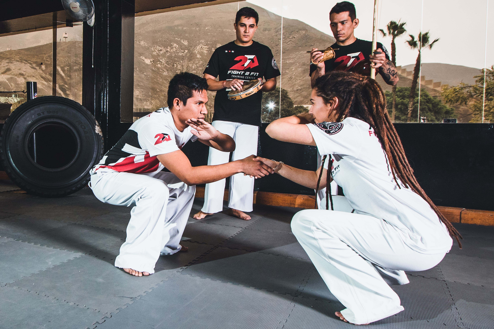
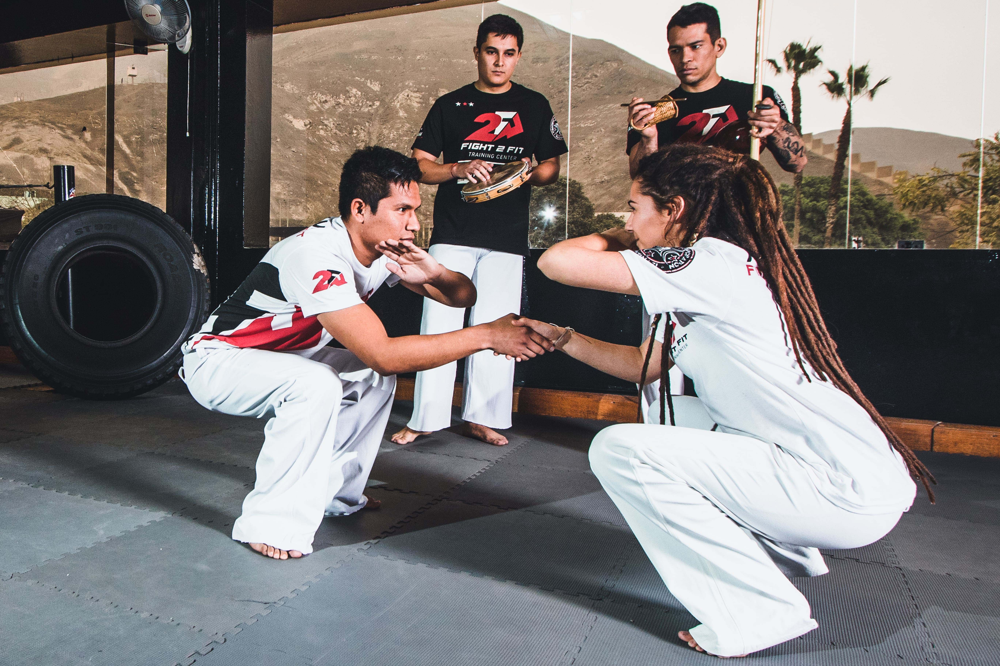

Coach
Biaggio Consoli
Muaythai
El Muaythai tiene la fama de ser el arte marcial más duro del mundo, tanto a nivel físico como a nivel mental, ya que es un deporte en el que se aceptan todas las técnicas de golpeo: puños, codos, piernas y rodillas. Por esa razón también es conocido como el arte de los ocho miembros, aunque esa definición no incluye el clinching, la técnica en que los rivales se agarran para derribar al otro.
Detrás del Muaythai se esconde toda una filosofía que incluye el impulso de los valores personales y humanos de quienes lo practican, alejando este arte marcial de la imagen violenta que proyecta en apariencia, y que ha sido magnificada por quienes desconocen este deporte. Por una parte, el Muay Thai nos ayuda a mejorar nuestras capacidades físicas; pero también nos inculca los valores del deporte: disciplina, control de emociones y sentimientos y una confianza que nos ayudará a avanzar en la vida.
Humildad, coraje y espíritu guerrero son la base de la filosofía del guerrero Muaythai, una persona cortés y educada con todo el mundo, fiel a sí mismo y a los demás y con una disposición y determinación tan fuerte como el acero y dura como el diamante. Pero no solo eso, los guerreros Muaythai son personas pacíficas, sin pensamientos o acciones que puedan resultar violentas, se entrenan y ejercitan con regularidad y siempre respetan las reglas para derrotar a su oponente.
Fotos del entrenamiento


 
